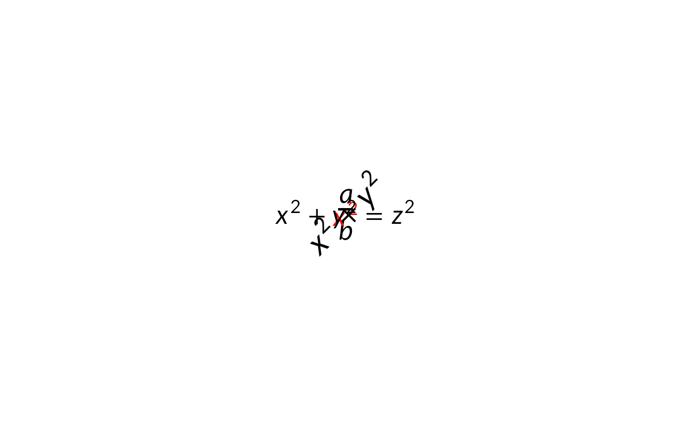

Parses a LaTeX math expression and returns a grid grob object
that renders the formula using native grid graphics primitives.
The grob supports standard grid queries such as grobWidth(),
grobHeight(), grobX(), and grobY().
A convenience wrapper that creates a latex_grob and
immediately draws it on the current device via
grid.draw.
Usage
latex_grob(
tex,
x = grid::unit(0.5, "npc"),
y = grid::unit(0.5, "npc"),
default.units = "npc",
hjust = 0.5,
vjust = 0.5,
rot = 0,
math_font = "",
max_width = 0,
tex_style = "",
input_mode = c("mixed", "math"),
render_mode = c("typeface", "path"),
justify = FALSE,
line_break = c("greedy", "optimal"),
debug = FALSE,
name = NULL,
gp = grid::gpar()
)
grid.latex(tex, ...)Arguments
- tex
Character string of LaTeX math code.
- x, y
Position in grid coordinates.
- default.units
Units for x, y if given as numeric.
- hjust, vjust
Horizontal/vertical justification. Accepts the usual numeric values in
[0, 1]. As a convenience,hjustalso accepts the strings"left"/"bbleft","center"/"centre"/"middle"/"bbcentre", and"right"/"bbright";vjustaccepts"bottom","center"/"centre"/"middle","top", and"baseline"."baseline"aligns the formula's math baseline with the anchor point — handy for placing a formula in flowing text.- rot
Rotation angle in degrees, counter-clockwise (default: 0). Matches the
rotparameter oftextGrob.- math_font
Name of the math font to use (e.g.,
"stix"). Use""(default) for Lete Sans Math, which pairs with R's default sans-serif text font. Seeavailable_math_fontsfor loaded fonts.- max_width
Numeric maximum width in big points for automatic line wrapping. Use
0(default) for no wrapping.- tex_style
Character: TeX style override. One of
""(default; let the parser decide),"display","text","script", or"scriptscript". Seelatex_grobfor the semantics of each value.- input_mode
How
texis interpreted before being parsed."mixed"(default) wraps the input in\text{...}so the string reads as ordinary text and$...$(or\(...\)) opens math mode, matching document-level LaTeX semantics. Useful for labels that arrive from external sources mixing prose and math without explicit\text{}markers."math"is the classic MicroTeX behaviour — the whole string is treated as math, so unwrapped prose renders as spaced math italics. The default can be changed globally vialatex_options(input_mode = "math"). Seelatex_wrapfor details on the wrapping process.- render_mode
Character string:
"typeface"(default) renders glyphs as native text using the math font, producing selectable/accessible text in PDF and SVG output. Bundled math fonts and any registered viaload_math_fontare read directly from their OTF files — no system-wide font install is required. Falls back to path mode automatically on devices that lack the R \(\geq\) 4.3 glyph engine (e.g., the basepdf()device). For selectable PDF output, prefercairo_pdf."path"renders math symbols as filled vector paths (works on all devices but text is not selectable in PDF/SVG).- justify
Logical. When
TRUE, wrapped text is stretched at its interword spaces so every line but the last fillsmax_widthexactly. Requiresmax_width: it acts on the lines the wrapper produces, so it does nothing on its own.FALSE(default) leaves the right edge ragged, matching R's own text drawing. In a narrow column, expect wide word spaces; mark the words that may break with\-to tighten them.- line_break
How lines are chosen when wrapping.
"greedy"(default) fills each line as far as it will go and never reconsiders."optimal"chooses the breaks together so the paragraph as a whole reads best, in the spirit of Knuth-Plass: pulling one word down early can improve every later line, which a greedy pass cannot see. Requiresmax_width, and costs a little more layout time.- debug
Logical; if
TRUE, draws diagnostic overlays on the grob — the full bounding box (dashed gray), the baseline (solid red), the depth line (dashed gray), and a small dot at each MicroTeX draw record's origin. Useful for checking positioning and diagnosing vertical alignment.- name
Optional grob name.
- gp
Graphical parameters (see
gpar). Common entries:col(formula foreground),fontfamily(text font),fontsize/cex(formula size), andlineheight(multi-line spacing). Seelatex_grobfor how each of these flows through MicroTeX.- ...
Additional arguments passed to
latex_grob.
Details
Controlling TeX style with tex_style
tex_style selects the size-and-spacing regime MicroTeX applies to
the whole expression. It changes the style (display vs. text), not
the font size — size is always set via gp$fontsize / gp$cex;
style-dependent shrinking (for "script" and "scriptscript") is
applied on top of that size.
""(default): let the parser choose based on the delimiters intex. Inline delimiters (single$, or\(...\)) produce"text"style; display delimiters (double$$, or\[...\]) produce"display"style. If the string has no delimiters, MicroTeX defaults to"text"style."display": force display style. Large operators (\sum,\int,\prod) render at their full size, limits are placed above/below rather than as subscripts/superscripts, and fractions use full-size numerators and denominators. Useful when you want a display-style equation inline in a label, legend, orelement_latex()title."text": force text (inline) style. Big operators shrink to their inline size and limits attach as scripts. The right choice for formulas embedded in a line of prose."script": force script style — the size normally used for first-level subscripts and superscripts. Produces a smaller, tighter layout; mainly useful for callouts or sub-labels where a compact equation is wanted."scriptscript": force scriptscript style — the smallest style, used by TeX for doubly-nested scripts. Rarely needed on its own; primarily for very dense annotations.
tex_style applies to the entire expression. To override the style
of a sub-expression from within tex, use the inline TeX commands
\displaystyle, \textstyle, \scriptstyle, or
\scriptscriptstyle.
Graphical parameters (gp)
col: default foreground color for the formula. Individual elements can still be overridden with an inline\textcolorcommand in the LaTeX string.fontfamily: controls the font of text inside\textand\mboxblocks. For example,gpar(fontfamily = "serif")renders\textcontent in R's serif family. Any font available to R's graphics system works — base families ("sans","serif","mono") as well as fonts registered via showtext or systemfonts. Math symbols always use the selected math font (seemath_font). Bold/italic text is controlled from within the LaTeX source (\textbf{},\textit{},\bf, ...), not viagp$fontface— MicroTeX needs the style at layout time to size each run correctly, so agpar()-level face is not consulted.fontfamilyalso drives MicroTeX's layout metrics for non-math text: the matching system font is resolved via systemfonts, a minimal metrics file is generated on first use and cached undertools::R_user_dir("gridmicrotex", "cache"), so MicroTeX's spacing of\textblocks stays in sync with what grid actually draws. Whenfontfamilyis unset, the R default ("sans") is used. No manual font loading is required for text fonts;load_math_font()remains only for adding custom math fonts.fontsize/cex: formula size isfontsize * cexbig points (default 20 * 1). Both math and text scale together. The effective size is baked into the parsed layout, so downstream viewports that inheritcexwill not re-scale the grob (matchingtextGrobsemantics whengpis set explicitly).lineheight: controls multi-line spacing (default 1.2). The inter-line gap is(lineheight - 1) * fontsizebig points.
LaTeX document-level wrappers
The parser accepts raw output from print.xtable(),
knitr::kable(), and similar functions that emit complete
tabular LaTeX. The following document-level constructs are
recognized and rewritten silently before the input reaches MicroTeX:
Removed (no visual effect):
%-to-end-of-line comments (escaped\%is preserved)preamble:
\documentclass[...]{...},\usepackage[...]{...},\begin{document}/\end{document}title metadata:
\maketitle,\title{...},\author{...}cross-reference labels:
\label{...}float wrappers:
\begin{table}/\end{table},\begin{figure}/\end{figure}(and starred variants)layout scopes:
\centering,\raggedright,\raggedleft,\flushleft,\flushright
Rewritten:
booktabs rules:
\toprule,\midrule,\bottomrule,\cmidruleare mapped to\hline. The optional column-range and trim arguments of\cmidruleare discarded (MicroTeX has no concept of partial-column rules).\caption[short]{X}is extracted as\text{X}\\at its source position, so a caption written after\includegraphicsrenders below the figure and one written before atabularrenders above the table. Full LaTeX instead positions the caption by float type regardless of source order, and numbers it from a counter; there is no counter here. Wrap the figure and its caption in\begin{array}{c}...\end{array}to centre them on each other (\centeringis dropped — a grob has no page to centre against).\graphicspath{{dir/}}and\DeclareGraphicsExtensions{...}are consumed rather than typeset; the former's directories are searched.
Images:
\includegraphics[opts]{file}draws a PNG, JPEG or SVG inline. The starred form is accepted and behaves identically.width,heightandscaletake any LaTeX length (\textwidthresolves againstmax_width, and without one falls back to the file's own size with a warning);scalemultiplies whateverwidth/heightsettled on, andkeepaspectratiofits inside them instead of stretching to fill.anglerotates the figure and grows the surrounding box to the rotated bounds, as\rotateboxdoes.origin,trim,clipandviewportare parsed but not applied, and warn once so the difference is not silent; so does a length that cannot be read, or one that sizes the figure to nothing.The extension may be omitted, as in LaTeX:
{plots/fig}findsplots/fig.svg, then.png,.jpg,.jpeg.An SVG is drawn as real vector and stays sharp at any output resolution; a bitmap does not, and warns when it would be shown below 150 dpi. PDF and EPS are not supported — save the figure as SVG instead. A file that cannot be read — missing, unsupported, or an SVG with no
rsvginstalled — warns and draws its name rather than disappearing.
Anything not in this list is passed to MicroTeX unchanged. An unknown command is not an error: MicroTeX typesets its name in red, which makes unsupported markup easy to spot in the output.
Parallelism
The MicroTeX engine keeps mutable C++ state for font caching and text
measurement. Rendering is safe single-threaded and under separate-process
backends such as future::plan(multisession). It is not safe
under forked backends (parallel::mclapply(),
future::plan(multicore)) on Unix, because forked workers share that
state without synchronisation. Use a socket/multisession backend instead.
See also
grid.latex, latex_dims,
geom_latex, available_math_fonts,
latex_wrap, latex_options
Examples
# \donttest{
g <- latex_grob(r"($\fcolorbox{red}{yellow}{\frac{a}{b}}$)",
x = grid::unit(0.3, "npc"),
y = grid::unit(0.3, "npc"),
gp = grid::gpar(fontsize = 30))
grid::grid.draw(g)
# Red formula
grid::grid.draw(latex_grob("$x^{2}$",
x = grid::unit(0.3, "npc"),
y = grid::unit(0.8, "npc"),
gp = grid::gpar(col = "red")))
# Rotated formula
grid::grid.draw(latex_grob(r"($\colorbox{BurntOrange}{x^{2}} + y^{2}$)",
x = grid::unit(0.6, "npc"),
y = grid::unit(0.3, "npc"),
gp = grid::gpar(fontsize = 24),
rot = 45))
grid.latex(r"($\textcolor{red}{x^{2}} + y^{2} = z^{2}$)",
x = grid::unit(0.6, "npc"),
y = grid::unit(0.8, "npc"),)

# }